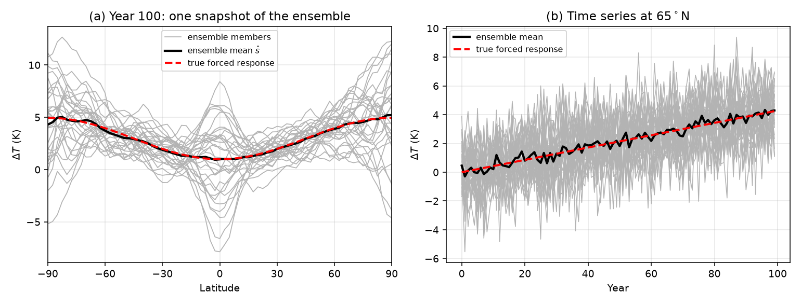
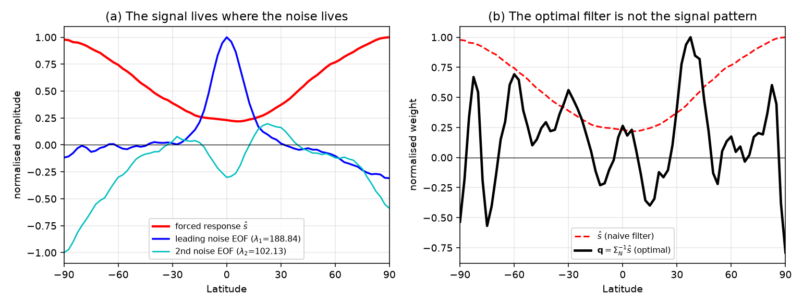
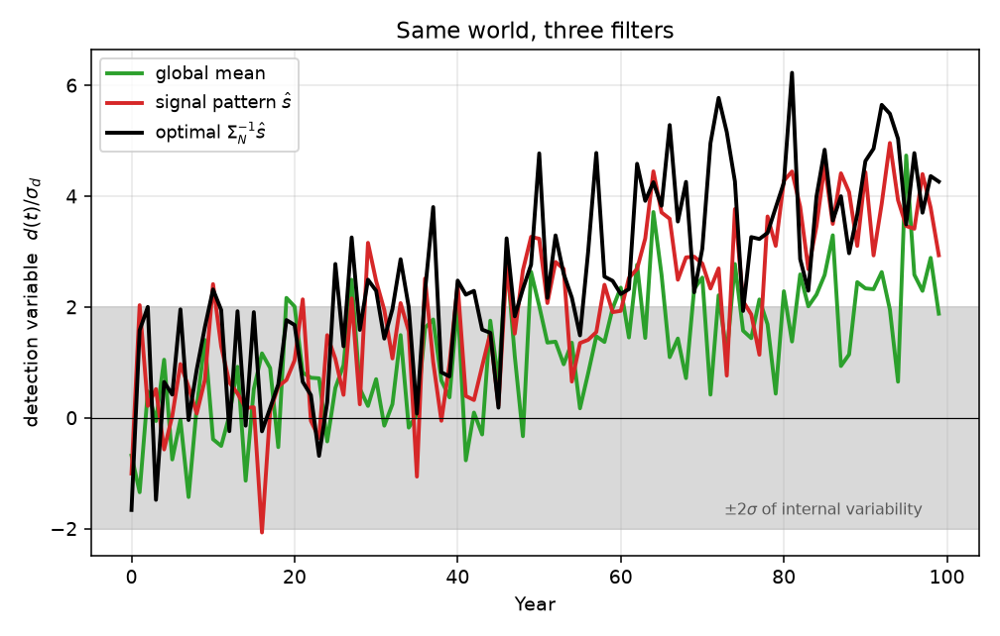
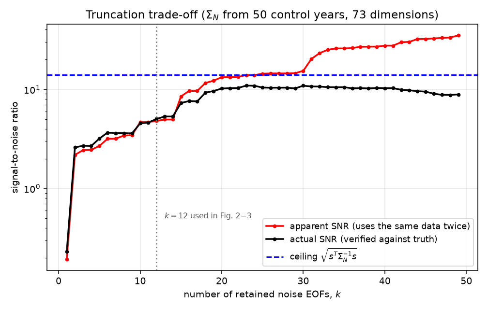
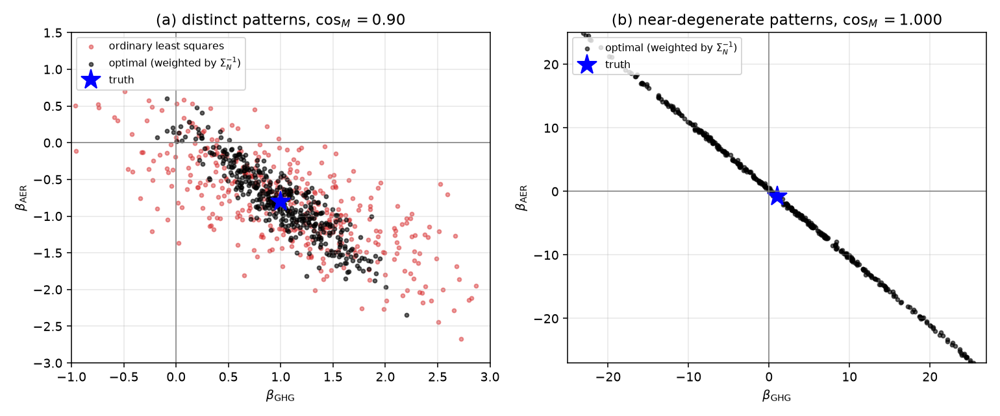

Week 10: Climate Change Fingerprints#
Predictability of the second kind#
Everything we did in week 9 was an initial-value problem. We started from an observation \(\mathbf{\theta}\), propagated the analysis distribution forward with the transition probability, and asked how much of that initial information survived to lead time \(\tau\). The answer was always the same shape: the forecast distribution broadens, the signal decays, and after a few e-folding times of the damping we are left with climatology. Lorenz called this predictability of the first kind.
This week we ask the opposite question. Suppose we do not care at all about the initial condition — suppose we are willing to wait until every memory of it is gone. Is there anything left to predict? There is, provided the system’s boundary conditions are changing. If we add CO\(_2\) to the atmosphere, the climatological distribution itself moves. Predicting that movement is predictability of the second kind, and it is a completely different kind of problem: the signal does not decay with lead time, it grows.
The practical version of this question is detection and attribution. We have one observed temperature record, which contains both a forced trend and whatever the weather and the ocean happened to be doing. We want to know (i) whether the forced part is there at all, and (ii) if it is, how much of it belongs to greenhouse gases, how much to aerosols, how much to volcanoes and the sun. The machinery that answers this was built by Klaus Hasselmann [], and it is called the fingerprint method.
The pleasant surprise of this chapter is that we do not need any new mathematics. The fingerprint method is (181) from last week, read in the other direction. What changes is only the physical meaning of the words signal and noise.
Note
It is worth remembering that the same person wrote both halves of this story. Hasselmann’s stochastic climate model [] is where the red-noise equation (160) that we leaned on all through week 9 comes from: the ocean integrates white weather forcing into red climate variability. Having established what internal variability looks like, he then asked how to find something that is not it. The 2021 Nobel Prize in Physics was for exactly this pair of ideas.
What is the signal, and what is the noise?#
Write the climate state as an \(n\)-dimensional vector \(\mathbf{x}(t)\) (grid points, or EOF coefficients, or grid points stacked over several decades — we will come back to that choice). Decompose it as
where \(\mathbf{s}(t)\) is the forced response, the part that is a deterministic function of the external forcing, and \(\mathbf{u}(t)\) is internal variability, with \(\langle \mathbf{u} \rangle = 0\) and covariance \(\Sigma_{N}\). There is only one Earth, so we never observe (186) split into its two pieces. The trick that makes the split operational is the initial-condition large ensemble []: run the same model, with the same forcing, from \(N\) slightly different initial states. Every member sees the same \(\mathbf{s}(t)\) and draws an independent \(\mathbf{u}_{e}(t)\), so
The ensemble mean estimates the forced response and the departures from it estimate internal variability. FIG22 shows this for the synthetic zonal-mean world we will use throughout this chapter: a polar-amplified warming of \(2.5\) K per century, buried in internal variability that is dominated by a tropically-trapped mode (think ENSO) plus a hemispherically asymmetric mode (think an annular mode) plus a red large-scale background.

Fig. 23 Signal and noise in a \(30\)-member initial-condition large ensemble. (a) The zonal-mean warming at year \(100\) in each member (gray), the ensemble mean (black) and the true forced response (red). (b) The same decomposition in time at \(65^{\circ}\)N. Individual members are useless; the ensemble mean recovers the forced response almost exactly.#
Compare this with week 9. There, the ensemble was over initial conditions drawn from a single analysis distribution \(p(\mathbf{i}|\mathbf{\theta})\), the signal was \(\mathrm{Var}_{\theta}(\mu_{v|\theta})\) — the part of the variance explained by knowing \(\mathbf{\theta}\) — and the noise was the forecast spread \(\sigma^{2}_{v|\theta}\). Here the ensemble is over realizations of internal variability under a fixed forcing, the signal is the forced response and the noise is everything else. The bookkeeping, however, is identical. The law of total variance that gave us (164) gives us
One point of care about (188). The forced response is deterministic, so it has no covariance of its own in the way \(\mathbf{u}\) does; \(\Sigma_{S}\) means the covariance of \(\mathbf{s}(t)\) taken over the ensemble of forcing histories we are willing to entertain — in practice, over the period of record, which is why the “forced variance” of a field is really a statement about the trend. With that reading, (188) is just (164) with \(\theta\) replaced by the forcing, and from here on everything is about the ratio of these two terms.
week 9 (predictable component) |
week 10 (fingerprint) |
|
|---|---|---|
ensemble over |
initial states consistent with \(\mathbf{\theta}\) |
realizations of internal variability |
signal |
information from the initial condition |
response to external forcing |
noise |
forecast spread \(\Sigma_{v\mid\theta}\) |
internal variability \(\Sigma_{N}\) |
behaviour in time |
signal decays, limit \(\approx\) weeks to seasons |
signal grows, emerges after decades |
what we extract |
the most predictable pattern |
the most detectable pattern |
Note
These two are not really separate problems; they are the two ends of one continuum. A decadal prediction has to do both at once — it needs the ocean initial state (first kind) and the forcing trajectory (second kind). The reason we can treat them separately in this course is the enormous gap in time scale between the two.
Why the forced pattern is not the fingerprint#
Suppose we compress the field onto a single number with a weight vector \(\mathbf{q}\),
This scalar \(d(t)\) is the detection variable. Its signal is \(\mathbf{q}^{T}\mathbf{s}\) and the variance of its noise is \(\mathbf{q}^{T}\Sigma_{N}\mathbf{q}\), so the quantity we care about is
which is again a Rayleigh quotient, exactly like (180), except that the numerator is now a rank-one form \(\mathbf{q}^{T}\mathbf{s}\mathbf{s}^{T}\mathbf{q}\).
The naive thing to do is to set \(\mathbf{q}=\mathbf{s}\): look for the warming where the warming is. This is what people did before 1979, and it is what we do whenever we use the global-mean temperature as our index. It is not optimal, and the reason is visible in FIG23a: the forced pattern and the dominant modes of internal variability overlap. Weighting by \(\mathbf{s}\) means loading up on the tropics and on the large-scale hemispheric structures, which are precisely the places where internal variability is loudest.
To do better, maximize (190). Factor the noise covariance as \(\Sigma_{N}=\mathbf{L}\mathbf{L}^{T}\) (Cholesky, or \(\Sigma_N^{1/2}\) — any square root will do) and change variables to \(\mathbf{w}=\mathbf{L}^{T}\mathbf{q}\) and \(\tilde{\mathbf{s}}=\mathbf{L}^{-1}\mathbf{s}\). Then
by the Cauchy–Schwarz inequality, with equality if and only if \(\mathbf{w}\propto\tilde{\mathbf{s}}\). Transforming back,
(192) is the optimal fingerprint []. The maximum attainable signal-to-noise ratio is the Mahalanobis length of the forced response, measured in the metric set by internal variability. Note what has happened to the geometry: “how big is the forced response” is now a meaningless question until we say relative to what, and the answer is relative to \(\Sigma_{N}\).
It helps to read (192) in the eigenbasis of the noise, \(\Sigma_{N}=\sum_{j}\lambda_{j}\mathbf{e}_{j}\mathbf{e}_{j}^{T}\),
Each noise EOF is an independent channel, each channel contributes its own squared signal-to-noise ratio, and the channels add in quadrature. The weighting \(1/\lambda_{j}\) is the whole story: a small forced response sitting in a quiet corner of phase space is worth more than a large response buried inside ENSO. This is why the optimal fingerprint pattern usually looks nothing like the forced response pattern (FIG23b) — the filter has thrown weight away from the tropics and onto the smaller scales where the red background noise is weak.

Fig. 24 (a) The forced response \(\hat{\mathbf{s}}\) (red) together with the two leading EOFs of internal variability. The signal is large exactly where the noise is large. (b) The naive filter \(\mathbf{q}=\hat{\mathbf{s}}\) (dashed) and the optimal filter \(\mathbf{q}=\Sigma_{N}^{-1}\hat{\mathbf{s}}\) (black), here truncated at \(k=12\) noise EOFs. The optimal filter down-weights the tropical peak of the leading noise mode and redistributes weight onto quieter, smaller scales.#
In code, the whole method is three lines:
# s_hat : (nlat,) forced response, e.g. trend of the ensemble mean
# Sigma_N : (nlat, nlat) internal variability covariance
lam, E = np.linalg.eigh(Sigma_N)
lam, E = lam[::-1], E[:, ::-1] # descending
k = 12 # truncation (see below)
q_opt = E[:, :k] @ ((E[:, :k].T @ s_hat) / lam[:k]) # the optimal fingerprint
d = q_opt @ obs # the detection variable
FIG24 applies all three filters to the same simulated world. By year \(100\) the expected signal-to-noise ratio is \(2.4\) for the global mean, \(4.1\) for the signal-pattern filter and \(5.0\) for the optimal filter. Because the forced response here grows linearly, those numbers translate directly into expected detection times: the global mean would cross \(2\sigma\) at year \(82\), the signal-pattern filter at year \(49\), the optimal fingerprint at year \(40\). In the single realization plotted, the global mean spends \(60\%\) of the last three decades above the noise band, the signal-pattern filter \(90\%\), and the optimal filter \(97\%\). Nothing about the physics changed between the three curves. Only the projection did.

Fig. 25 The detection variable \(d(t)\) for one realization, normalised by its own internal-variability standard deviation, for three filters. Shading marks \(\pm 2\sigma\) of internal variability. Expected signal-to-noise ratios at year 100: \(2.4\) (global mean), \(4.1\) (signal pattern), \(5.0\) (optimal, truncated at \(k=12\)).#
Note
If \(\mathbf{s}\) happens to be an eigenvector of \(\Sigma_{N}\), then \(\Sigma_{N}^{-1}\mathbf{s}\propto\mathbf{s}\) and optimal fingerprinting buys nothing. Equivalently: optimal fingerprinting pays off exactly to the extent that internal variability is not isotropic in the coordinates we chose. For the real climate system it is wildly anisotropic, which is why the method matters.
It is the same eigenvalue problem as last week#
Stated as an eigenvalue problem, maximizing (190) is
a generalized eigenvalue problem with a rank-one left-hand side, so it has exactly one non-zero eigenvalue \(\lambda=\mathbf{s}^{T}\Sigma_{N}^{-1}\mathbf{s}\) with eigenvector \(\Sigma_{N}^{-1}\mathbf{s}\), which is (192) again.
Now compare it with the predictable-component problem (181), \(\Sigma_{v|\theta}\mathbf{q}=\lambda\Sigma_{v}\mathbf{q}\), where we wanted the smallest eigenvalue. Identify \(\Sigma_{v|\theta}\) with the unpredictable part \(\Sigma_{N}\) and \(\Sigma_{v}\) with the total \(\Sigma_{\mathbf{x}}\). Because of (188), for any \(\mathbf{q}\)
The signal-to-noise ratio is a monotonically decreasing function of \(\Delta\). Minimizing \(\Delta\) and maximizing \(S/N\) are the same optimization, they have the same eigenvectors, and their eigenvalues are related by \(\lambda_{S/N}=1/\lambda_{\Delta}-1\). The predictable component analysis of week 9 and the optimal fingerprint of week 10 are literally the same linear algebra; what distinguishes them is only which physical process we have decided to call “signal”.
This also means the information-theoretic metrics of (179) transfer over unchanged. For a Gaussian detection variable,
which is Shannon’s capacity formula for a Gaussian channel. Read it as: the external forcing is a transmitter, internal variability is the channel noise, and the observed climate record is the received message. Detection is the statement that the channel is carrying more than zero bits, and the optimal fingerprint is the receiver that extracts the most of them. Maximizing signal-to-noise, maximizing mutual information, and minimizing the normalised error variance are three descriptions of one calculation.
Estimating \(\Sigma_{N}\): where the method actually breaks#
(192) contains \(\Sigma_{N}^{-1}\), and that inverse is the hard part. Suppose our state vector has \(n\) components and we estimate \(\Sigma_{N}\) from \(m\) samples — a long control integration, or the pooled ensemble anomalies \(\hat{\mathbf{u}}_{e}\) of (187). In climate applications \(n\) is typically thousands (grid points \(\times\) time windows) while the number of effectively independent samples \(m\) is at best hundreds. The sample covariance is then rank-deficient or very nearly so, and its small eigenvalues are both badly estimated and systematically biased low. Since (193) divides by those very eigenvalues, the filter puts enormous weight on exactly the directions it knows least about.
FIG25 shows what this looks like. The red curve is the signal-to-noise ratio we would report if we used the same noise sample to build the filter and to normalise it. The black curve is what that filter actually achieves against the true covariance. Up to \(k\approx 20\) they agree and both rise steeply: each new EOF adds a genuine channel. Beyond that the apparent SNR keeps climbing — straight through the theoretical ceiling \(\sqrt{\mathbf{s}^{T}\Sigma_{N}^{-1}\mathbf{s}}\), which should be impossible — while the real skill flattens and then decays. That gap is pure overfitting.

Fig. 26 Signal-to-noise ratio of the truncated optimal filter as a function of the number of retained noise EOFs \(k\), with \(\Sigma_{N}\) estimated from \(50\) control years in a \(73\)-dimensional state space. Red: apparent SNR, computed with the same noise sample used to build the filter. Black: actual SNR, verified against the true \(\Sigma_{N}\). Blue dashed: the theoretical ceiling.#
Three standard defences:
Truncate. Keep only the leading \(k\) noise EOFs, with \(k\) comfortably smaller than \(m\). This is the classical choice, and the price is that any part of the signal living outside the retained subspace is discarded.
Regularise. Shrink the sample covariance toward a well-conditioned target, \(\tilde{\Sigma}_{N}=(1-\gamma)\hat{\Sigma}_{N}+\gamma\,\mu\mathbf{I}\), with \(\gamma\) chosen analytically (Ledoit–Wolf). This is regularised optimal fingerprinting [], and it avoids having to pick \(k\) by hand.
Split the sample. Use one independent half of the control run to build the fingerprint and the other half to compute the uncertainty of \(\hat{\beta}\) and to run the residual consistency test [], which asks whether the leftover \(\mathbf{y}-\mathbf{X}\hat{\beta}\) is statistically compatible with the model’s own internal variability. If the model understates low-frequency variability — a real and recurring problem — the test is what catches it, and without it a detection claim is not worth much.
Note
Note the asymmetry of the failure mode. Truncating too aggressively costs us statistical power: we might fail to detect something real. Truncating too loosely costs us validity: we report a confident detection that is an artefact of a badly inverted matrix. In detection and attribution the second error is far more expensive, which is why the literature is so conservative about truncation.
Detection and attribution as a regression#
So far there has been one signal. The real problem has several, and Hasselmann’s multi-pattern formulation [] writes the observations as a regression,
where \(\mathbf{y}\) is the observed field, each \(\mathbf{x}_{i}\) is the model-simulated response to one forcing agent (greenhouse gases, anthropogenic aerosols, ozone, land use, volcanoes, solar), and \(\mathbf{u}\sim\mathcal{N}(0,\Sigma_{N})\). The generalized least-squares estimate is
and by the Gauss–Markov theorem this is the minimum-variance unbiased linear estimator. For \(r=1\) it collapses to \(\hat{\beta}=\mathbf{s}^{T}\Sigma_{N}^{-1}\mathbf{y}\,/\,\mathbf{s}^{T}\Sigma_{N}^{-1}\mathbf{s}\), i.e. the optimal fingerprint of (192) with a particular normalisation. In general, the rows of \((\mathbf{X}^{T}\Sigma_{N}^{-1}\mathbf{X})^{-1}\mathbf{X}^{T}\Sigma_{N}^{-1}\) are the optimal fingerprints: the \(i\)-th row is the filter that responds to \(\mathbf{x}_{i}\) with unit gain while being blind to all the other \(\mathbf{x}_{j}\) and as quiet as possible against \(\Sigma_{N}\).
Why estimate scaling factors at all, instead of simply asking whether the pattern is present? Because we trust climate models much more about pattern than about amplitude. A model with too high a climate sensitivity, or too strong an aerosol indirect effect, will still put the warming in roughly the right places. Letting \(\beta_{i}\) float absorbs that amplitude error, and the value of \(\hat{\beta}_{i}\) then becomes an observational constraint on the model. This is the logic behind the standard vocabulary:
Detection: \(\beta_{i}\) is significantly greater than zero. The response is present in the record and cannot be explained by internal variability alone.
Attribution: \(\beta_{i}\) is additionally consistent with \(1\) (the model has the right amplitude), the residual consistency test passes, and no other forcing can account for the same structure.
Separating the forced response of different components#
(198) is where the attribution question gets interesting, because \(\mathrm{Cov}(\hat{\mathbf{\beta}})=(\mathbf{X}^{T}\Sigma_{N}^{-1}\mathbf{X})^{-1}\) says that our ability to separate two forcings has nothing to do with how big their responses are. It depends on how distinguishable they are after prewhitening. Define the Mahalanobis cosine between two response patterns,
For two signals, the variance of each scaling factor is inflated relative to the single-signal case by the factor
which is finite but unpleasant at \(\cos_{M}=0.9\) (\(\mathrm{VIF}=5.3\)) and catastrophic as \(\cos_{M}\rightarrow1\). FIG26 makes this concrete. In panel (a) the two forcings have genuinely different meridional structures, \(\cos_{M}=0.90\); the scaling factors scatter around the truth, and optimal weighting cuts the spread of \(\hat{\beta}_{\mathrm{GHG}}\) almost in half compared with ordinary least squares (\(0.43\) versus \(0.78\)). In panel (b) the second pattern has been made a near-twin of the first, \(\cos_{M}=0.9999\); the estimates now lie on a knife-edge ridge running along \(\beta_{1}+\beta_{2}=\mathrm{const}\), with a standard deviation of \(12\). The sum of the two responses is still perfectly well determined — the data constrain the total warming just fine — but the split between them is meaningless.

Fig. 27 Scaling factors \(\hat{\beta}\) from \(400\) realizations of internal variability, truth marked by the star. (a) Two distinguishable forcing patterns, \(\cos_{M}=0.90\); red is ordinary least squares, black is optimally weighted. (b) Two nearly collinear patterns, \(\cos_{M}=0.9999\), optimally weighted — note the axis range. Degeneracy, not noise amplitude, is what destroys attribution.#
This single fact explains most of the design choices in real detection and attribution studies. If two forcings are hard to tell apart in one coordinate, you enlarge the state vector until they separate:
Greenhouse gases versus solar. Both warm the surface, so a surface-only fingerprint is nearly degenerate. Add the vertical dimension and the degeneracy vanishes: more CO\(_2\) warms the troposphere and cools the stratosphere, whereas a brighter sun warms both. This vertical contrast is the cleanest discriminant in the whole subject.
Greenhouse gases versus aerosols. Aerosols are short-lived and emitted regionally, so their response is hemispherically asymmetric and concentrated over and downwind of industrial regions, while the greenhouse response is comparatively smooth and polar-amplified. Equally important, their time histories differ: aerosol forcing rose until the 1970s and then flattened or reversed, while greenhouse forcing accelerated.
Volcanic and solar. These separate most easily in time rather than space — volcanic forcing is episodic with a two-to-three-year decay, solar forcing is quasi-cyclic at eleven years.
Land use. Separates in the diurnal cycle and in regional land–sea contrast rather than in the annual-mean large-scale field.
Hence the standard practice of building the state vector as a space–time object: concatenate decadal-mean maps from several successive decades into one long vector. Doing so adds exactly the coordinates in which the forcings differ, raises the Mahalanobis angle between fingerprints, and turns an unanswerable question into an answerable one.
Two caveats are worth stating explicitly. First, (197) assumes additivity: the response to several forcings together is the sum of the individual responses. For large-scale temperature this holds well; for precipitation, circulation and anything involving aerosol–cloud interaction it is a real approximation, and it is one reason attribution statements for those variables are weaker. Second, the single-forcing responses \(\mathbf{x}_{i}\) themselves come from finite ensembles, so \(\mathrm{Cov}(\hat{\mathbf{x}}_{i})=\Sigma_{N}/N_{i}\), and a regression with noisy predictors is biased toward zero — classical regression dilution. Correcting it is what total least squares does in this context [], and it is why the small single-forcing ensembles (often \(3\) members) are a bigger limitation on attribution than the length of the observational record.
How long do we have to wait?#
One last piece of intuition, which follows from (190) once we remember that \(\mathbf{s}\) grows with time while \(\Sigma_{N}\) does not. Take the simplest case: a linear trend \(b\,t\) observed for \(T\) years against white noise of variance \(\sigma^{2}\). The least-squares trend estimate has variance \(\approx 12\sigma^{2}/T^{3}\), so
and the time to reach a chosen detection threshold scales as \(T_{d}\propto(\sigma/b)^{2/3}\). Two things follow. First, detection is inevitable: the signal-to-noise ratio grows without bound simply because the forcing keeps accumulating, so “has it been detected yet?” is a question about \(T\), not about whether the physics is there. Second, the \(2/3\) exponent is brutal. Halving the noise — by a better fingerprint, a better observing system, or a cleverer filter — only shortens the detection time by a factor \(2^{2/3}\approx1.6\). Waiting is a surprisingly effective strategy, and the historical record shows exactly this: the signal was marginal in the 1980s, detected in the 1990s, and is now so far outside the noise band that the interesting questions have all moved to regional scales and to extremes, where \(\Sigma_{N}\) is much larger and we are back in the 1980s again. (For red noise with decorrelation time \(\tau\), replace \(\sigma^{2}\) by \(\sim2\tau\sigma^{2}\); nothing qualitative changes, but \(T_{d}\) grows, which is why getting the low-frequency variability of the control run right matters so much.)
Note
In the homework assignment you will build the optimal fingerprint for a synthetic warming signal, compare it against the global mean and against the raw signal pattern, and then repeat the exercise with the noise covariance estimated from a short control run to see the overfitting of FIG25 appear in your own numbers. Then try the two-forcing version: how similar do two response patterns have to be before the scaling factors stop meaning anything?